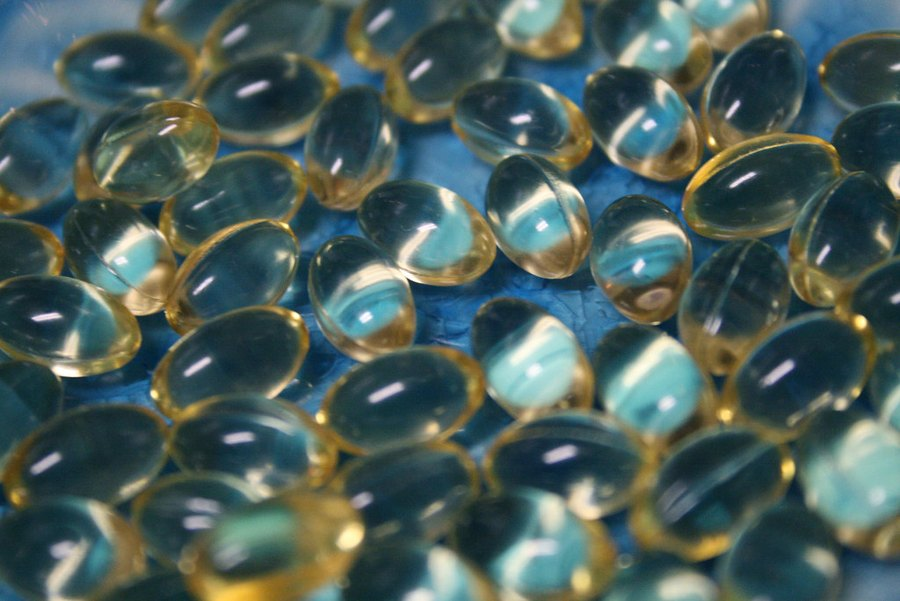

Memopezil vs Focus Factor: A Side-by-Side for Buyers Over 50
Focus Factor is a multivitamin with a brain blend folded in. Memopezil is five ingredients and nothing else. If you're over 50 and already take other supplements, that difference matters more than it looks.

Key takeaways
- Focus Factor is a broad blend: a full multivitamin plus a brain-health blend of many ingredients. Check the current label for exact amounts, since versions differ.
- Memopezil is a focused stack of five ingredients with every dose printed: BCAAs 540 mg, bacopa 200 mg, rhodiola 100 mg, L-theanine 100 mg, panax ginseng 90 mg.
- Overlap is the hidden issue for over 50s. If you already take a multivitamin, Focus Factor can double several vitamins. Memopezil adds no vitamins at all.
- Focus Factor is far easier to find, in big-box stores and pharmacies. Memopezil is official-site only with a 60-day guarantee.
- Neither has strong independent proof for the finished product. Bacopa, at a disclosed dose in Memopezil, has the best ingredient-level research.
Memopezil vs Focus Factor is focused formula against kitchen sink. Focus Factor folds a full multivitamin and a broad brain blend into one product, so you get many ingredients, several at small amounts. Memopezil sticks to five ingredients with every dose printed, built around bacopa. For over 50s already taking a multivitamin, Memopezil avoids doubling up.
Focus Factor has been on shelves for a long time and it's one of the most recognized names in the category. Memopezil is newer and sells only online. On the surface they promise similar things. Underneath, they're built on opposite ideas about what a memory supplement should be.
Our complete Memopezil review covers that product in depth. Here, we focus on how it compares with Focus Factor for a buyer over 50, which is where the differences actually bite.

Memopezil: check today's price
Five ingredients with every dose printed: BCAAs, bacopa, rhodiola, L-theanine and panax ginseng. Two capsules a day, stimulant-free. Sold only on the official site, with a 60-day money-back guarantee.
See the official price →How do Memopezil and Focus Factor compare side by side?
| Memopezil | Focus Factor (Original) | |
|---|---|---|
| Formula | BCAAs, bacopa monnieri, rhodiola rosea, L-theanine, panax ginseng | Multivitamin and minerals plus a proprietary brain blend |
| Disclosed doses | Yes, all five: 540 / 200 / 100 / 100 / 90 mg | Vitamins and minerals listed individually; the brain blend shows one combined weight |
| Ingredient count | 5 | Many; check the current label |
| Daily serving | 2 capsules | Several tablets; check the current label |
| Evidence depth | Bacopa has many independent trials; no trial on the finished formula | Brand cites its own testing; blend doses can't be checked against research |
| Cost per day | About $1.63 to $2.63, depending on pack | Price divided by days per bottle at the labeled serving |
| Guarantee | 60 days from the seller, official orders | Retailer return policy; check the brand's own terms |
| Where sold | Official site only | Big-box stores, warehouse clubs, pharmacies, online |
| Added vitamins | None | Yes, a full multivitamin |
Memopezil prices are the ones published at the time of writing. Check the official page for current numbers.
What is Focus Factor, and what's in it?
Focus Factor is sold by Synergy CHC and marketed as a brain-health supplement for memory, focus and concentration. There are several versions, including the original, an extra-strength line, a kids' formula and an energy version with caffeine. This comparison uses the original.
The formula has two parts. The first is a multivitamin and mineral base: the familiar vitamins A, C, D, E and the B group, plus minerals. The second is a brain-health blend listing a long run of ingredients under one combined weight. Depending on the version, that blend has included names like bacopa, DMAE, huperzine A and phosphatidylserine among others. Formulas change over time, so check the label on the bottle you're actually considering.
The multivitamin part is a real nutritional product. Its amounts are printed and some are close to full daily values. The brain blend is where it gets harder to judge. When a dozen or more ingredients share one weight with no split, you can't tell whether the bacopa in it is 5 mg or 150 mg. That's the core problem with proprietary blends, and Focus Factor isn't unique in using one.
If you're holding a Focus Factor bottle, or any blend-based product, here's a quick way to read it:
- Find the blend's total weight. It's printed next to the blend name on the supplement facts panel.
- Count the ingredients inside it. Divide the weight by that number to get a rough average per ingredient.
- Compare with research doses. Bacopa is studied at about 300 mg, phosphatidylserine at about 300 mg a day. If the whole blend is smaller than one of those numbers, most ingredients are present in small amounts.
- Remember the order. Ingredients are listed by weight, so the first one is the largest. The ones near the end are usually the smallest.
That isn't a precise method. It's a sanity check, and it takes about a minute.
Why does a focused formula matter more after 50?
Three reasons, and they're all practical.
First, overlap. Many people over 50 already take a multivitamin, often a senior formula, plus vitamin D, maybe calcium, maybe a B12. Adding a product that contains another full multivitamin can push some nutrients well above where you need them. Fat-soluble vitamins like A and E build up in the body rather than washing out. For most people this won't be dangerous at a single product's level, but it's pointless at best and worth a pharmacist's look if you take several things.
Second, medications. The more ingredients a product has, the more there is to check against your prescriptions. Huperzine A, which appears in some Focus Factor versions, acts on acetylcholine, the same pathway as some prescription memory drugs. Vitamin K in a multivitamin can matter if you take warfarin. A five-ingredient label is simply quicker to clear with your doctor. Our huperzine A guide explains why that ingredient deserves a closer look.
Third, dose. A focused formula can give each ingredient more room. Whether it does is another matter, which brings us to Memopezil's label.
There's a fourth, softer reason. After 50, people often juggle a pill organizer already. Every extra tablet is another chance to skip a day, and memory supplements only have a chance of working with steady daily use over months. Two capsules is a smaller ask than a handful of tablets, though one capsule would be smaller still.
What's in Memopezil, and how close are its doses to the research?
Memopezil's two-capsule serving contains five ingredients, 1,030 mg in total, with no vitamins added. Here's how each dose compares with the amounts used in studies.
- Bacopa monnieri, 200 mg. Trials usually use 300 mg of standardized extract for about 12 weeks. Two-thirds of that. The best-researched memory herb on either label.
- Rhodiola rosea, 100 mg. Studied from about 100 mg upward for mental fatigue. In range, at the low end.
- L-theanine, 100 mg. Studied at 100 to 200 mg for calm focus. In range.
- Panax ginseng, 90 mg. Cognition trials mostly use 200 to 400 mg. Under half.
- BCAAs, 540 mg. Research uses grams, not milligrams. A token amount.
That's an honest mixed picture. Three of five are close to or inside research ranges. Two aren't. The difference from Focus Factor is that you can see all of this yourself. With a blend, the same exercise can't be done.
Which has better evidence for memory?
Neither product has independent, published trial evidence on its finished formula that would settle the question. Focus Factor's marketing has referred to its own testing. Memopezil has no formula trial at all.
At the ingredient level, the comparison is more useful. Bacopa has the deepest independent research of any memory herb, with randomized trials showing modest improvement in delayed recall after 8 to 12 weeks. Focus Factor may contain bacopa too, but without a disclosed amount you can't tell whether it's close to a studied dose. Memopezil's 200 mg is on the label.
The multivitamin side of Focus Factor helps if you're actually short on something, B12 being the classic example in older adults. If your levels are normal, extra vitamins don't sharpen memory. A blood test answers that question better than any supplement. For a wider view of what's worth taking, see our guide to brain supplements and what they can and can't do.
How do I take each one, and how long before I know?
Focus Factor's serving is several tablets a day; the bottle tells you how many. Taking them with food is the usual advice for a multivitamin.
Memopezil is two capsules a day with water, in the morning, with or shortly before a meal. The full routine is in our Memopezil dosage guide. Plan on 8 to 12 weeks before judging it, because that's where bacopa's research reports results. L-theanine and rhodiola may make you feel calmer within days, but that's a stress effect, not memory.
Which costs less per day?
Focus Factor is widely discounted, especially at warehouse clubs, and it's often cheap per bottle. To compare fairly, divide the price by the number of days a bottle lasts at the labeled serving, not by the number of tablets. Remember that part of what you're paying for is a multivitamin you may already own.
Memopezil's 60-capsule bottle lasts 30 days. At the published pack prices that's about $2.63 a day on two bottles plus shipping, about $2.30 on three and about $1.63 on six, with free US shipping on the larger packs. No subscription and no auto-ship.
 2 Bottles · Starter
$79/bottle
Check Availability →
+ shipping
6 Bottles · Best Value
$49/bottle
Claim Discount →
Free US Shipping
2 Bottles · Starter
$79/bottle
Check Availability →
+ shipping
6 Bottles · Best Value
$49/bottle
Claim Discount →
Free US Shipping
 3 Bottles · Popular
$69/bottle
Claim Discount →
Free US Shipping
3 Bottles · Popular
$69/bottle
Claim Discount →
Free US Shipping
Prices shown are the manufacturer's published rates at the time of writing and can change without notice.
If you choose Memopezil, buy enough to cover 12 weeks. The 2-bottle pack runs out before bacopa's research window closes, so three bottles is the realistic minimum for a fair test.
A quick worked example helps. Twelve weeks of Memopezil on the 3-bottle pack is $207 with free US shipping. Twelve weeks of a discount-store product might cost less, but if it also duplicates a multivitamin you already pay for, part of that money buys nothing new. Price the part you'd actually use.
Refunds and buying safely
Focus Factor bought in a store falls under that store's return policy. The brand may have its own terms for direct orders, so read them before you rely on them.
Memopezil's 60-day money-back guarantee comes from the seller and covers official orders, even if bottles are opened or empty. It doesn't cover marketplace listings, which are resellers or counterfeits. Since 60 days is shorter than a full bacopa trial, start the day the bottles arrive and decide around week eight.
Who should skip each one?
Skip Focus Factor, or clear it with your doctor first, if you already take a multivitamin, take warfarin, take a prescription memory drug, or have been told to limit specific vitamins or minerals.
Skip Memopezil, or clear it first, if you take blood thinners, diabetes or thyroid medication, antidepressants or sedatives, or if you're pregnant or breastfeeding. Ginseng and rhodiola both interact with some of these. Bacopa can upset the stomach if you take it without food.
Skip both if your memory changes are sudden or getting worse. That's a reason to see a doctor, not to try a supplement. Neither product treats or prevents dementia.
Memopezil vs Focus Factor: pros and cons
| Pros | Cons | |
|---|---|---|
| Memopezil | Short label with every dose printed; bacopa anchor; no vitamin overlap; stimulant-free; 60-day seller guarantee; quick to check against medications | Ginseng and BCAAs underdosed; bacopa below trial standard; online only; no formula trial; costs more per bottle than discount-store options |
| Focus Factor | Easy to buy almost anywhere; often inexpensive; includes a multivitamin some people may genuinely need; long market history | Brain blend hides individual doses; overlaps with existing multivitamins; more ingredients to check against medications; several tablets a day |
The verdict for buyers over 50
If you don't take a multivitamin, you're on a tight budget and you want something from the store this afternoon, Focus Factor is a reasonable, low-commitment option. Go in knowing that its brain blend can't be dose-checked and that the multivitamin part is doing a lot of the work.
If you already have your vitamins covered and want a memory product you can actually evaluate, Memopezil is the cleaner fit. Five ingredients, every amount visible, no duplication, and a 60-day guarantee from the seller. It's not perfectly dosed and it takes about three months to judge.
For most readers in their 50s, 60s and 70s, we'd lean Memopezil, mainly because of the overlap problem. Habits still come first, and our list of foods and habits that support memory is free. If you'd like the full field, our 2026 memory supplement ranking has it.
Memopezil: check today's price
Five ingredients with every dose printed: BCAAs, bacopa, rhodiola, L-theanine and panax ginseng. Two capsules a day, stimulant-free. Sold only on the official site, with a 60-day money-back guarantee.
See the official price →Frequently asked questions
Can I take Memopezil with my regular multivitamin?
For most people, yes. Memopezil contains no vitamins or minerals, so it doesn't duplicate a multivitamin. Its ingredients are BCAAs, bacopa, rhodiola, L-theanine and panax ginseng. If you take prescription medication, check with your doctor or pharmacist first, since ginseng and rhodiola have known interactions.
Does Focus Factor contain caffeine?
The original formula isn't marketed as a caffeine product, but the brand sells an energy version that does contain caffeine. Check the label of the exact product you're buying. Memopezil contains no caffeine or other stimulants.
Is Focus Factor a multivitamin or a memory supplement?
Both. It combines a multivitamin and mineral base with a proprietary brain-health blend. That's why it suits people who don't already take a multivitamin better than those who do.
Why can't I see how much bacopa is in Focus Factor?
Because it sits inside a proprietary blend, which lists ingredients under one combined weight without the individual amounts. That's legal and common, but it means you can't compare each ingredient with research doses. Memopezil prints all five amounts, including 200 mg of bacopa.
Can I switch from Focus Factor to Memopezil?
Generally yes, and you don't need to taper either one. Stop one and start the other rather than stacking them, so you can tell which is doing what. If you take medication, mention the change to your doctor.
Is Memopezil sold at Costco or Walmart?
No. Memopezil is only sold through its official website. It isn't on Amazon or in Walmart, Costco, CVS, Walgreens or GNC, and marketplace listings aren't covered by its 60-day money-back guarantee.
Will either supplement help with memory loss from aging?
They may offer modest support for ordinary age-related slips, but no supplement reverses memory loss or treats dementia. Sleep, exercise, blood pressure control and treating things like low B12 or thyroid problems tend to matter more. See a doctor if changes are sudden or getting worse.
Prefer a label you can actually check?
Memopezil prints all five doses, adds no vitamins you already take and comes with a 60-day money-back guarantee. See the official pack prices.
See Memopezil's official price →Related: Memopezil review 2026 · Memopezil dosage and how to take it · Huperzine A for memory · Brain supplements explained · Best memory supplements of 2026